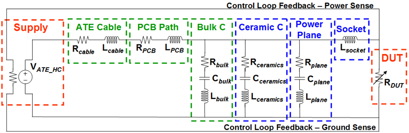
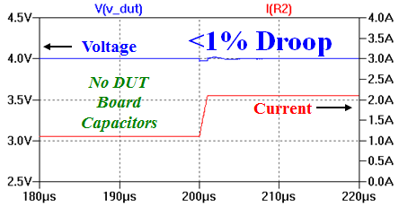
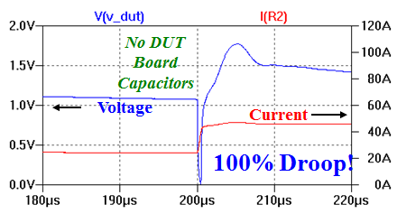

UHC4 / UHC4T low-level high-current design
An ideal test system power supply would have infinite current, no ripple, no delay.
However, the complete routing path of a real world power distribution network (PDN) of the tester power supplies can be better described using the following model:

- Supply:
Control loop defines response time and stability of the supply. DUT board load and the total routing path is part of the control loop.
- Bulk C:
Sources and sinks current to and from the DUT while waiting for the test system power supply to respond. Needs to provide phase stability through the supply control loop.
- Ceramic C:
Fast response high frequency decoupling close to the DUT. There is a maximum ceramic C allowed to maintain supply control loop stability.
- Power Plane:
Allows for small voltage drop only when routing power from and to the DUT.
- Socket:
Inductive voltage drop that is in series with the supply and also affects the supply ripple at the DUT.
Note Any PDN covers two areas of expertise and thus a split of design responsibilities. For details see Two areas of expertise in PDN design.Note The use case scenarios described below refer to new DUT board designs. For a check of existing DUT board designs refer to Checking the basic UHC4 / UHC4T stability requirements.
Use Case Scenarios
Low voltage, high current, and fast transient applications magnify the problem of power supply finite response ability.
- Scenario 1: 4 Volt, 1 Amp, 2 μS transient
Example for traditional device with slow transients, lower power, and higher DUT impedance.

While in scenario 1 above you can achieve almost no voltage droop, the requirements of scenario 2 below result in large voltage swing.
- Scenario 2: 1 Volt, 20 Amp, 500 nS transient
Example for contemporary device with faster transients, high power, and low DUT impedance.

Functional changes
- Introduced in SmarTest 7.2.1